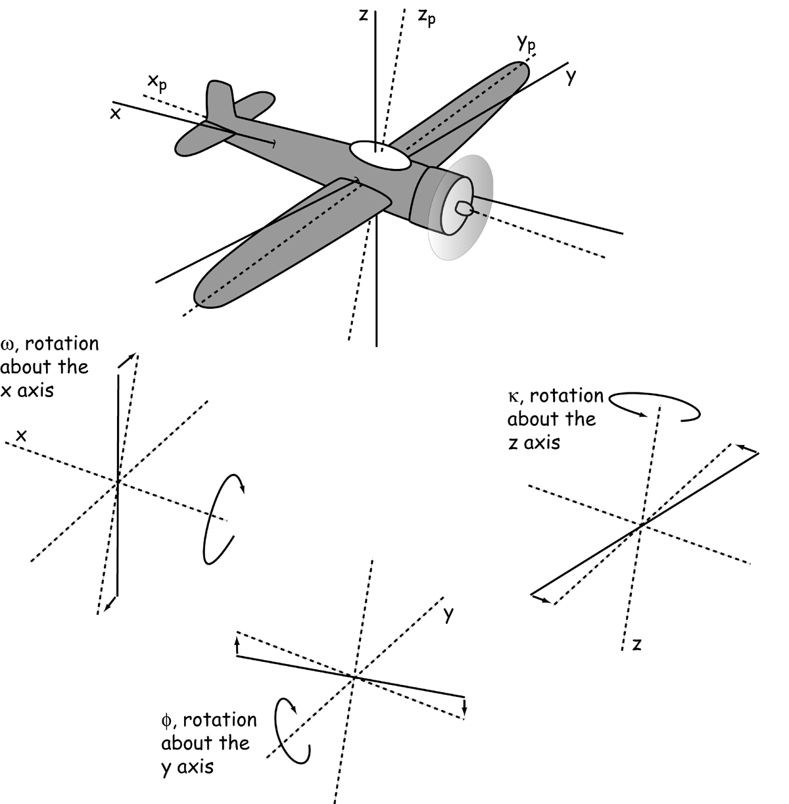
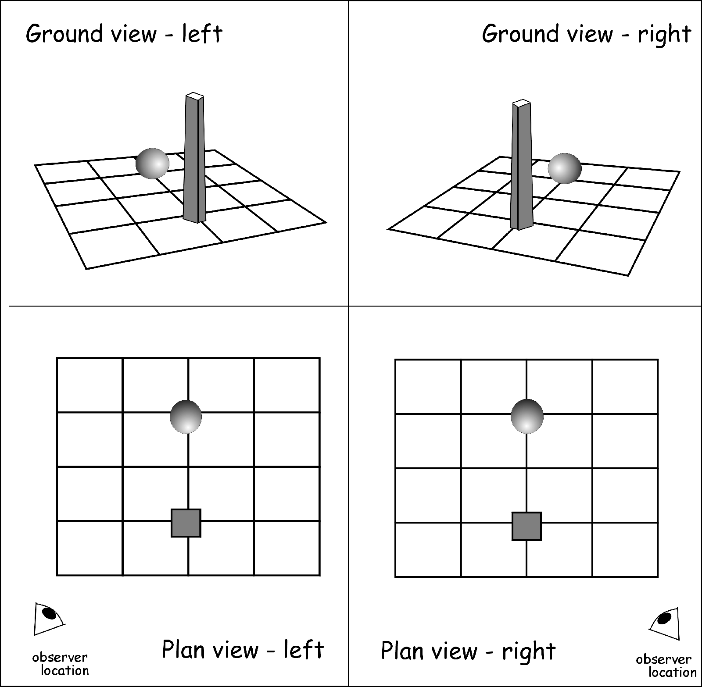

Week 6:
Aerial and Satellite Images
Intro to GIS
Evan Lue, PhD
Large Extents, High Resolution
Bolstad 2012, Fig 6.1
Why We Like It
- Land area coverage
- Extended spectral range
- Geometric accuracy
- Permanent record
- Rapid and frequent
Important Terms
- Remote sensing - The acquisition of data using measuring instruments from a distance; typically refers to data collected from aircrafts and satellites
- Aerial image - Taken from aircrafts
- Satellite image - Taken from satellites
Electromagnetic (EM) Spectrum
- EM spectrum - The full range of wavelengths of light
- Wavelength - The distance over which the wave's shape repeats; often nm (nanometers), µm (micrometers)
Graphic by Philip Ronan
The EM Spectrum and Earth's Atmosphere
Bolstad 2012, Fig 6.2
Spectral Reflectance
% reflectance (y-axis) vs wavelength in µm (x-axis)
Bolstad 2012, Fig 6.3
Source to Sensor
Bolstad 2012, Fig 6.4
Photogrammetry
The science of measuring geometry from images
Bolstad 2012, Fig 6.5
Bolstad 2012, Fig 6.6
More Terms
- Passive system - Remote sensing that measures energy generated by the sun
- Active system - Remote sensing that measures energy generated by the system
- Sensing media - The digital sensor or film that records light
- Optical axis - The central direction of the incoming image,oriented to intersect the sensor in perpendicular direction
- Focal plane - The flat stage that images are recorded on, perpendicular to the optical axis
- Header (digital) or data strip (film) - Like metadata for time, altitude, and other conditions, but recorded as part of the data
Scale, Extent, and Resolution
- Image scale - Like map scale; a scale of 1:24,000 means an inch on the image represents 24,000 inches
- Image extent - The area that an image covers
- Image resolution - The smallest object that can be detected on the imagel, typically referred to as pixel size
A Simple Camera
Bolstad 2012, Fig 6.7
Calculating image extent:
Bolstad 2012, Eqs 6.1 and 6.2
Digital Aerial Collection
Bolstad 2012, Fig 6.9

Bolstad 2012, Fig 6.12
A Few More Terms
- Pixel - Picture element, the smallest physical addressable point in a raster
- Band - Waveband; a raster of a single wavelength
- Co-registration - Alignment of individual raster bands to make a multi-band image
- Format - Not file formats, but rather sizes for images, such as 240 mm; also applies to paper sizes
15cm Resolution

Bolstad 2012, Fig 6.8
Types of Views
- Orthogonality - The relation of two lines at right angles to one another (perpendicularity)
- Orthographic view - Projects at right angles to the datum plane
- Perspective or oblique view - A "slanted", non-orthogonal view (perspective and oblique may mean different things in other fields)
Orthographic vs. Perspective Views
Bolstad 2012, Fig 6.15
Relief Displacement
- The radial displacement of objects that are at different elevations
- Nadir - The lowest point; contrast with zenith
Bolstad 2012, Fig 6.16
Graphic from http://www.amesremote.com/section1.htm
Common Characteristics of Terrain Distortion in Vertical Aerial Images
- Terrain distortions are radial
- Angles and distances are affected
- Scale is not constant
- Not orthographic
Tilt and Perspective Convergence
The phenomenon where objects farther away apear closer together than equivalently-spaced near objects
Bolstad 2012, Fig 6.17
Tilt Causes Distortions
Bolstad 2012, Fig 6.18
Image Tilt Angles
Bolstad 2012, Fig 6.19
Error from Tilt and Terrain
Bolstad 2012, Fig 6.20
Other Kinds of Distortion
- Radial lens displacement - Distortion caused by the lens
- Atmospheric distortion - Distortion caused by the atmosphere
Example of Radial Lens Displacement
Bolstad 2012, Fig 6.21
Stereo photographic coverage
Sequential photos in a flight line overlap with endlaps and sidelaps
Bolstad 2012, Fig 6.22
Stereomodel
The 3D perception of a stereopair, allowing us to observe depth
Image of a stereoscope from http://serc.carleton.edu
3D Developments Today
Image from http://serc.carleton.edu
Image from http://venturebeat.com/
Images from http://www.google.com/
Parallax
Shift in the relative distances and positions of objects due to a shift in observer location; responsible for stereomodels
Bolstad 2012, Fig 6.23
Parallax
Shift in the relative distances and positions of objects due to a shift in observer location; responsible for stereomodels

Animation by Nathaniel Domek
Distortion Removal
Orthophotos/images/quads - Aerial images that have uniform scale and true geometry
Bolstad 2012, Fig 6.24
Calculating Relief Displacement
Bolstad 2012, Fig 6.25

Bolstad 2012 Equations
Softcopy Photogrammetery
The practice of creating orthophotos by removing distortion from aerial images
Bolstad 2012, Fig 6.26
Creating Orthophotos
Scanning/Digitizing
Bolstad 2012, Fig 6.27a
Creating Orthophotos
Control Points
Bolstad 2012, Fig 6.27b
Creating Orthophotos
Mosaic - Images with overlap that are stitched together to create a single image
Bolstad 2012, Fig 6.27c
Creating Orthophotos
Final Product
Bolstad 2012, Fig 6.27d
Photointerpretation
- Converting images to information
- Minimum mapping unit - Defines the lower limit on what is considered significant
Bolstad 2012, Fig 6.28
Satellites
Image from http://nasaesw.strategies.org/
Instantaneous Field of View (IFOV)
The size of the area that is viewed by each detector; related to resolved pixel size
Bolstad 2012, Fig 6.29
Path/Row System
Bolstad 2012, Fig 6.30
1-meter by the Ikonos satellite system
Bolstad 2012, Fig 6.31
0.5-meter by the WorldView-2 Satellite
Bolstad 2012, Fig 6.32
SPOT Satellites
- Satellite Pour l'Observation de la Terre
- Centre national d'études spatiales (CNES)
Bolstad 2012, Fig 6.33
Bolstad 2012, Fig 6.34
Landsat Satellites
- NASA - National Aeronautics and Space Administration
- MSS - Multispectral Scanner
- TM - Thematic Mapper
- ETM+ - Enhanced Thematic Mapper
Bolstad 2012, Fig 6.35
Number of Bands
- Multispectral - A few
- Superspectral - A few dozen
- Hyperspectral - Hundreds
MODIS Sensor
Moderate Resolution Imaging Sensor (NASA)
Note that there is a difference between satellites and sensors
Bolstad 2012, Fig 6.37
VEGETATION Sensor
CNES
Bolstad 2012, Fig 6.38
Resourcesat-1
The Indian Space Research Organization
Bolstad 2012, Fig 6.36
MERIS
European Space Agency (ESA)
Bolstad 2012, Fig 6.39
Light Detection and Ranging (LiDAR)
Waveform LiDAR
Bolstad 2012, Fig 6.40
Discrete-return LiDAR
Point clouds
Bolstad 2012, Fig 6.41
LiDAR for Elevation Data
Bolstad 2012, Fig 6.42
Land Cover/Use Classification
Bolstad 2012, Fig 6.43
Some More Satellites
Planet Labs
Image from http://www.satmagazine.com
Skybox Imaging
Image from http://www.skybox.com